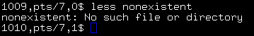

Dan was a coworker of mine at the university I work at for a while. Dan used csh and tcsh for a long time before moving to Bash, so he uses the history number a lot. He uses "screen" a lot, and for that, it's helpful to have the tty. The last part of his prompt is the return value of the last executed command. Dan doesn't like having the $PWD in his prompt because it makes the prompt grow and shrink too much.
#!/bin/bash
# Dan's prompt looks like this:
# 543,p3,0$
#
PROMPT_COMMAND=""
function dan {
local cur_tty=$(temp=$(tty) ; echo ${temp:5});
PS1="\!,$cur_tty,\$?\$ "
}
|

Dan's prompt: history number, tty number, return value of the last executed function.